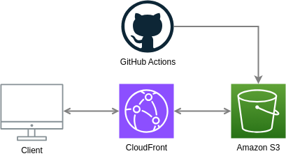

Ir a la principal
Sergio Giovanni Jacobo Jáuregui
Me considero una persona altamente autodidacta y que no le gusta dejar cosas a medias, soy comunicativo, perceptivo y responsable, me gusta trabajar en equipo. Tengo un año de experiencia desarrollando APIs REST que se conectan con los servicios de AWS y creando frontends responsivos usando tecnologías basadas en JS, Ruby, Python y PHP donde RoR y Vue.js son donde más destaco y siendo backend mi mayor fuerte.
| AWS Certified Cloud Practitioner | Me interesa la Arquitectura TI y el mundo DevOps, este certificado lo obtuve en 2023 y considero que mi capacidad autodidacta me ayudó a tenerlo. Verificar en Credly |
| Correo electrónico | Número de teléfono | |
|---|---|---|
| serggiovanni@gmail.com | +51 988588085 | Visita mi perfil de Linkedin |
CloudFront es un servicio de entrega de contenido que se comunica con S3 para obtener estos archvios estáticos, siendo CloudFront un CDN global ¡Esta página esta disponible en cualquier parte del mundo!
El despliegue de esta pagina y la demostracion de frontends tiene como objetivo demostrar mis conocimientos principalmente en el uso de AWS más que en el de desarrollo de frontend, como ya mencioné mi mayor fuerte es backend.